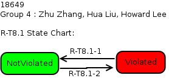

| Transition |
Condition |
| R-T6-1 |
mDriveSpeed == [0,STOP] && (mCarCall[f,b] == true || mHallCall[f,b,d] == true) |
| R-T6-2 | mDriveSpeed == [0,STOP]
&& mCarCall[f,b] == false &&
mHallCall[f,b,d] == false && currentFloor !=
lastStoppedFloor |
| R-T6-3 | mDriveSpeed != [0,STOP] |
| R-T6-4 | mDriveSpeed != [0,STOP] |
| Transition |
Condition |
| R-T7-1 |
DoorMotor == OPEN &&
(CarCall[f,b] == true || HallCall[f,b,d] == true) |
| R-T7-2 | DoorMotor == OPEN && !(CarCall[f,b] == true || HallCall[f,b,d] == true) |
| R-T7-3 | DoorMotor != OPEN |
| R-T7-4 | DoorMotor != OPEN |

| Transition |
Condition |
| R-T8.1-1 |
anyOtherCall == true
&& !(CarLantern[d] == true) &&
mDesiredFloor.d == STOP |
| R-T8.1-2 | !(anyOtherCall == true && !(CarLantern[d] == true)) && mDesiredFloor.d == STOP |
| Transition |
Condition |
| R-T8.2-1 |
CarLantern[UP] == true
&& CarLantern[DOWN] == true |
| R-T8.2-2 | !(CarLantern[UP] == true
&& CarLantern[DOWN] == true) |

| Transition |
Condition |
| R-T8.3-1 |
(CarLantern[UP] == true && mDesiredFloor.f < currentFloor) || (CarLantern[DOWN] == true && mDesiredFloor.f > currentFloor) |
| R-T8.3-2 | !((CarLantern[UP] == true
&& mDesiredFloor.f < currentFloor) ||
(CarLantern[DOWN] == true && mDesiredFloor.f >
currentFloor)) |
| Transition |
Condition |
| R-T9-1 |
Drive.s == Slow &&
fastCalculation == true |
| R-T9-2 | Drive.s == Slow &&
fastCalculation == false |
| R-T9-3 | Drive.s != Slow |
| R-T9-4 | Drive.s != Slow |
| R-T9-5 |
Drive.s == Slow && fastCalculation == false |
| R-T9-6 |
Drive.s == Slow && fastCalculation == true |
| Transition |
Condition |
| R-T10-1 |
mDoorReversal == true |
| R-T10-2 | mDoorClosed == true |
| R-T10-3 | mDoorMotor == Nudge |
| R-T10-4 | mDoorClosed == true |
| R-T10-5 |
mDoorMotor == Nudge |
| Acceptance
Test Name |
Verification
Status |
Link to
Verification Results |
Notes |
| proj7acceptance1.pass |
pass |
elevator-proj7acceptance1.pass-0.stats |
|
| proj7acceptance2.pass |
pass |
elevator-proj7acceptance2.pass-0.stats |
|
| proj7acceptance3.pass |
pass |
elevator-proj7acceptance3.pass-0.stats |
|
| proj8group4acceptance1.pass |
pass |
elevator-proj8group4acceptance1.pass-0.stats |
|
| proj12acceptance1.pass |
pass |
elevator-proj12acceptance1.pass-0.stats |
|
| proj12acceptance2.pass |
pass |
elevator-proj12acceptance2.pass-0.stats |
|
| proj12acceptance3.pass |
pass |
elevator-proj12acceptance3.pass-0.stats |
|
| uppeak_final.pass |
pass |
elevator-uppeak_final.pass-0.stats |
|
| downpeak_final.pass |
pass |
elevator-downpeak_final.pass-0.stats |
|
| normal_final.pass | pass |
elevator-normal_final.pass-0.stats |